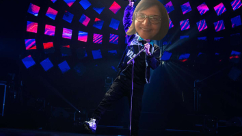
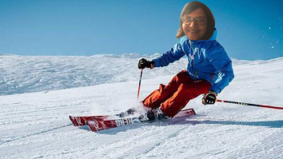
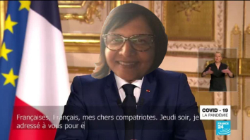
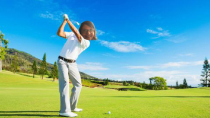
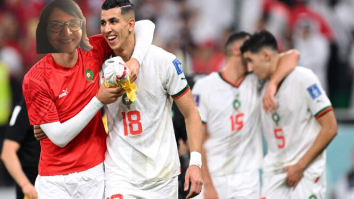
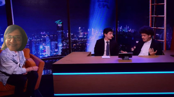
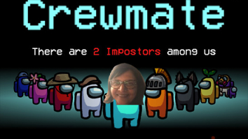

Mon Bercy
Après une tournée de 2 mois à travers le monde, je finis dans cette légendaire salle parisienne. Fraichement élu single de diamant, mon morceau Pôle API connaît un succès jamais égalé.
Weekend ski
Lors d’un hors piste en dehors des pistes, je me retrouve poursuivie par de la neige dégringolant le flanc de montagne (aka une avalanche). C’est avec ma légendaire force herculéenne que je repousse l’avalanche, et sauve par la même occasion un village complet.
Mon allocution
Alors que la planète entière a les yeux rivés sur son poste de télévision, je prends la parole à 20h pour faire de grandes annonces : c’est ainsi que je prononce cette phrase désormais culte et qui m’a valu un prix Nobel de la paix : “Je suis contre la faim dans le monde”.
Mon meilleur 18 trous
Après un stage de 3 mois avec Tiger Woods, j’ai réussi à perfectionner mon swing. Deux mois plus tard, je fais l’exploit de réaliser un 18 trous en seulement 4 coups. Du jamais vu auparavant dans le monde du golf.
Ma coupe du monde
Alors que j’avais été privée des terrains pendant 2 mois à cause d’un kebab un peu trop chargé en sauce samouraï, j’amène le Maroc en demi-finale de coupe du monde.
Mon passage sur Zen
Un lundi soir banal, je décide de participer à zen et de poser mon meilleur classique. Le public de Twitch est conquis et me demande de faire des Streams régulièrement ce que j’accepte bien évidemment.
Mon arrivée dans le monde du gaming
Quelques temps après mon début sur Twitch, je participe à une partie de AmongUs, un jeu jeune et dynamique. Pour cette partie, je suis membre de l’équipage et je sauve une game qui semblait perdue d’avance.
